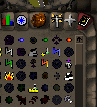
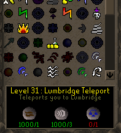
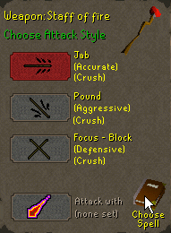

Magic Skill Guide
Using magic spells
|
Pointing at the spell book item brings up the magic menu. From here you can select spells to cast.
This will bring up a screen of all spells available to you within the game. If the picture of a spell is darkened, it means that you do not yet have a high enough level to cast it or you do not have the runes in your inventory to do so. If a spell is lit up on this screen, then it means that you are a high enough level to cast it and you have enough runes in your inventory. To cast the spell just click on the spell picture, and then click on your desired target in the main game window. Some spells can only be cast on hostile monsters, other spells can only be cast on yourself or inventory items, so experiment to see what targets are valid for each spell. |
 |
| For more information on a spell move your mouse cursor over the spell. A description of the spell and a list of which are runes are required is shown at the bottom of the window. Each required rune has 2 numbers shown below a picture of it. The 1st number indicates how many of that rune you have, and the 2nd number indicates how many you require. The numbers will be drawn in red for runes which you do not have a sufficient number of to cast the spell. Runes can be obtained in a number of ways. Mages can make their own runes using the runecraft skill (see the runecraft guide). Other ways to get runes include buying them in magic shops in towns such as Varrock and Port Sarim or by killing monsters. |  |
Rune Types
To cast spells in the game you need the correct runes. Each of the runes has a different power, and is used for a different category of spell. Information about each of the runes is shown below:| Runes | |
|---|---|
| One of the 4 elemental runes. Can be replaced by a staff of air. |
|
| One of the 4 elemental runes. Can be replaced by a staff of water. |
|
| One of the 4 elemental runes. Can be replaced by a staff of earth. |
|
| One of the 4 elemental runes. Can be replaced by a staff of fire. |
|
| Required for strike spells. | |
| Required for curse spells. | |
| Required for bolt spells. | |
| Required for jewellery enchant spells. | |
| Required for object conversion spells. | |
| Required for blast spells. | |
| Required for teleport spells. | |
| Required for high level curse spells. | |
| Required for high level wave spells. | |
Staffs
|
If you want to cast many spells against opponents without clicking repeatedly, then you should use a staff. Staffs have a "recast" option as one of their combat styles.
If you wield a staff and select the combat style menu (the crossed sword icon on the player interface) you will see a book in the bottom left corner. Clicking on that will allow you to chose any of the elemental spells you are able to cast and tie them to your staff. If you then select the "attack with" combat style on your staff you will automatically fight by casting that spell when you enter combat. |
 |
Notes about Magic
- Heavy armour is very conductive of magic. Mages will often find themselves more effective against a hand to hand fighter in full armour than other enemies. You will notice enemies in full metal armour will be hit hard by spells, but also wearing heavy metal armour will affect your ability to cast spells successfully. The recommended equipment for Mages is light robes, to allow magical power to flow from you freely.
- Sometimes spells will fail to work. If a spell fails, you will still gain the experience from casting the spell, and you will still use the runes required to cast it, but you will see a 'splash' effect on your opponent showing the failure of the spell. The higher level spells are more likely to fail, but as your magic ability improves you will cast spells successfully more of the time.
The Magic Guild
Members who have a magic level of 66 or greater may enter the Magic Guild which is located in Yanille.Inside the Magic Guild you will find a useful magic shop which sells a variety of runes and staffs for mages, including the extremely rare soul runes. There is also a small training area filled with zombies, as well as magical portals to various other parts of the RuneScape world all accessible from within this guild.
Enchanting Jewellery
Players of the correct magic level will be able to enchant various items of jewellery that can be bought from shops or other players, or make them using the crafting skill.Below is a table showing at what level you can enchant each item of jewellery, and what the effects of enchanting them are.
| Item name | Level | Effect when equipped | Uses |
|---|---|---|---|
| 7 | Will deal the enemy you are fighting 10% of any damage you receive | Allows a total damage of 40 to be done | |
| 7 | While worn players Magic attack is boosted by 10 | Permanent. Works whenever it is equipped |
|
| 7 | Allows the player to teleport to the Burthorpe Games Rooms | Each necklace allows 8 teleports in total | |
| 27 | Allows the player to teleport to the entrance of the Duel Arena | Each ring allows 8 teleports in total | |
| 27 | While worn the players defence will be boosted by 7 | Permanent. Works whenever it is equipped |
|
| 49 | While smelting Iron ore the player will have a 100% success rate | Allows 140 iron ores to be smelted in total | |
| 49 | While worn players strength is boosted by 10 | Permanent. Works whenever it is equipped |
|
| 57 | If your hitpoints drop below 10% without killing you, you will be teleported to Lumbridge | Allows one teleport | |
| 57 | While worn the players attack, strength and defence will be boosted by 6 | Permanent. Works whenever it is equipped |
|
| 68 | While equipped the chance of getting rare items from monsters is increased | Permanent. Works whenever it is equipped |
|
| 68 | Boosts attack, strength, magic, ranged and defence when worn. Can also be charged in the Heroes Guild to allow teleporting and to increase the chances of getting a gem when mining. | Permanent. Works whenever it is equipped |